You are an intelligent AI player playing a game. Your goal is to make progress and maximize total reward within the fixed time budget. BREAKOUT Quick Guide: Goal: Rewards are earned by hitting bricks with a ball controlled by a paddle while avoiding the ball falling down. A player has five lives. Available actions: - noop: Do nothing. The paddle remains stationary. - start: At the beginning of the same, generate a ball - left: Move the paddle to the left - right: Move the paddle to the right Your Task: Based on the current state of the game (which will be provided to you), decide on your next actions. Your move can contain 1 to 10 actions. Each action is executed for 0.1 second. As a result, your move is for the next 0.1 to 1 seconds. You are encouraged to plan for less actions if the ball is low and close, as shorter plans (fewer actions) will get feedback sooner. An example of response is: thought: your thought here move: [right, right, right] Action Planning Guidelines: - Your objective is to maximize total reward within the fixed game window. - If no ball (a small red dot) is on the screen, the first action must be start to serve a new ball into play. - If there is a ball on the screen, that means the game has already started. Only press left, right, or noop in this case. The ball is small so pay attention - The choice between left and right should be based on the ball's current trajectory and horizontal position. Try to infer the trajectory based on the historical images. - Losing a life does not directly reduce score, but it wastes time because the ball must be relaunched and scoring opportunities are interrupted. Avoid life loss whenever possible. - For action durations exceeding 0.1 seconds, the left and right movements will speed up after the first 0.1 seconds, then the speed will remain the same. - After a left or right command, expect the paddle to continue moving slightly for an additional 0.1 seconds no matter what next action you choose. Time Budget: You are optimizing total reward over a fixed budget of 30 seconds. Losing a life does not directly reduce your score, but it does consume time because the game pauses and restarts the player state. To make your decision, you will be provided with both historical context from your current game session and the current, up-to-the-moment game state. ** Historical Context ** The historical data is organized into units called "clips." A clip represents the complete sequence of events from one of your previous move responses and contains: * Actions: The list of actions you chose. * Game States: The sequence of game images with timestamps that resulted from your actions. * Feedback: This includes positive or negative scores, or notification that a life was lost and play restarted. If nothing significant happened or there was no score change, no feedback will be attached. You will receive two types of history built from clips: * Non-Zero Reward History (if available): Highlights from your current gameplay showing the specific moments where your actions led directly to non-zero rewards. This information helps you understand the game's reward mechanics and how to maximize your chances of earning more. * Recent History: The most recent clips of gameplay, showing your last actions and the immediate outcomes. This provides context for the current game trajectory. ** Current Game State ** * Current State: A single, up-to-the-moment snapshot of the game, including the current timestamp and screen image. This is the state from which you must plan your immediate next actions. Below is the non-zero reward history (if available) to help understand the game's reward mechanics: <non_zero_reward_history> <clip start="18.00s" to end="19.00s"> <start_state>
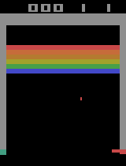
</start_state> <actions>['start', 'left', 'left', 'left', 'left', 'left', 'left', 'left', 'left', 'left']</actions> <states_and_rewards_after_actions> time: 18.10s
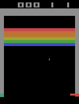
time: 18.20s
time: 18.30s
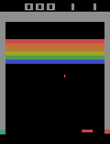
time: 18.40s
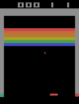
time: 18.50s
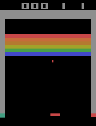
time: 18.60s
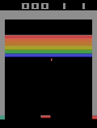
time: 18.70s
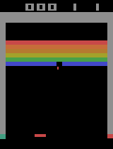
Feedback: You received a positive score! time: 18.80s
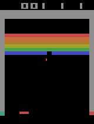
time: 18.90s
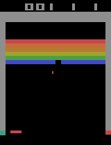
time: 19.00s
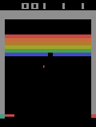
</states_and_rewards_after_actions> </clip> <clip start="22.60s" to end="23.60s"> <start_state>
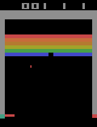
</start_state> <actions>['right', 'right', 'right', 'right', 'right', 'right', 'right', 'right', 'right', 'right']</actions> <states_and_rewards_after_actions> time: 22.70s
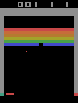
time: 22.80s
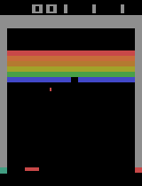
time: 22.90s
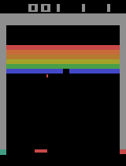
time: 23.00s
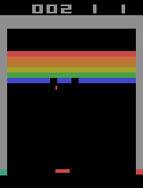
Feedback: You received a positive score! time: 23.10s
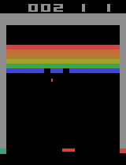
time: 23.20s
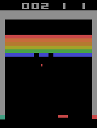
time: 23.30s
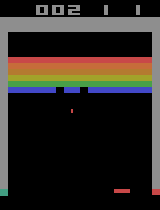
time: 23.40s
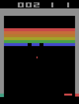
time: 23.50s
time: 23.60s
</states_and_rewards_after_actions> </clip> <clip start="25.20s" to end="25.73s"> <start_state>
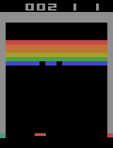
</start_state> <actions>['right', 'right', 'right', 'right', 'right', 'right']</actions> <states_and_rewards_after_actions> time: 25.30s
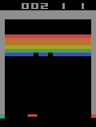
time: 25.40s
time: 25.50s
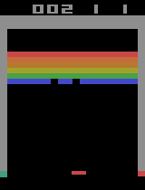
time: 25.60s
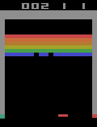
time: 25.70s
time: 25.73s
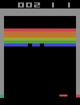
Feedback: A life was lost and a new life has begun. This does not directly reduce your score, but the restart consumes time. </states_and_rewards_after_actions> </clip> Context: This clip ended with the episode terminating, and the run continued from a freshly reset game afterward. </non_zero_reward_history> Below is the recent history to help understand the recent game trajectory: <recent_history> <clip start="24.30s" to end="24.70s"> <start_state>
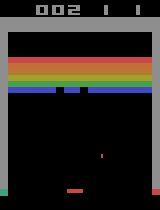
</start_state> <actions>['right', 'right', 'right', 'right']</actions> <states_and_rewards_after_actions> time: 24.40s
time: 24.50s
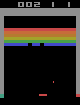
time: 24.60s
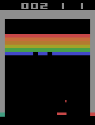
time: 24.70s
</states_and_rewards_after_actions> </clip> <clip start="24.70s" to end="25.20s"> <start_state>
</start_state> <actions>['left', 'left', 'left', 'left', 'left']</actions> <states_and_rewards_after_actions> time: 24.80s
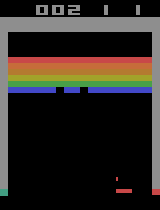
time: 24.90s
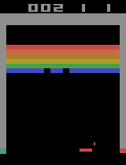
time: 25.00s
time: 25.10s
time: 25.20s
</states_and_rewards_after_actions> </clip> <clip start="25.20s" to end="25.73s"> <start_state>
</start_state> <actions>['right', 'right', 'right', 'right', 'right', 'right']</actions> <states_and_rewards_after_actions> time: 25.30s
time: 25.40s
time: 25.50s
time: 25.60s
time: 25.70s
time: 25.73s
Feedback: A life was lost and a new life has begun. This does not directly reduce your score, but the restart consumes time. </states_and_rewards_after_actions> </clip> Context: This clip ended with the episode terminating, and the run continued from a freshly reset game afterward. </recent_history> Below is the current state: time: 25.77s
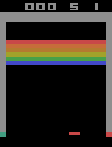
Now please predict the next actions. IMPORTANT: You MUST format your response using EXACTLY these lines: thought: [Your reasoning about the game state] move: [action_1, action_2, ..., action_n] Context update: The previous episode ended early, and the current frame is the start of a new game. Keep using the recent clips and reward history as context, but treat the current ball, paddle, and lives as reset.